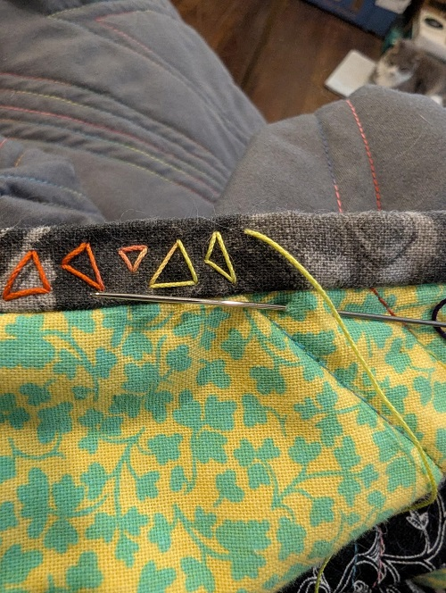

Big HST from FQs Quilt
Started: 2025
Status: In progress
This quilt was supposed to be a quick and easy palate cleanser quilt after spending too much time on a very frustrating project. It's basically just 16 giant HSTs (Half Square Triangles) from 2 FQ (Fat Quarter) packs from Jo-anns (RIP).
I even decided to not fuss too much with evening out edges or obsessing over making the quilt sando perfect, I don't think I touched a ruler once when making it.
Then for some reason, some strange reason, some silly reason... I decided to add embroidery around edges of zebra stripes and around floral motifs. The pace on this has been slow going and I decided to wrap up the embroidery near the edges of the quilt so I could at least trim and bind it already. The edges of the quilt sando were getting kinda fluffy and frayed. I talked myself out of having a pieced binding that would change color across each of the HSTs to really contrast it. I think the idea would be really cool but I'm going to save it for another project. Some of the fabric in the quilt is a bit meh for me and the HSTs are so big it's hard to overlook it so I don't want to spend too much more time unnecessarily (or so I thought) on a complicated binding. So I did a basic gray tones swirl fabric from my scrap bin as a binding all around it.
Then for some reason, the same strange and silly reasons that possessed me before I decided to add some abstract stitched triangles along the binding. And this was after hand stitching the binding on... I initially went with my trusty rainbow sewing thread but it was taking forever so I knew something had to change. Instead of giving up on the endeavor I went out to the local needle crafts shop and found some awesome rainbow cotton perle crochet thread. The process is still slow but I'm re-framing how I think about it as "engaging in mindful slow stitching" instead of "wasting time on an ugly quilt". I'm sure I'll love it more once it is complete but right now the backside is my favorite.
